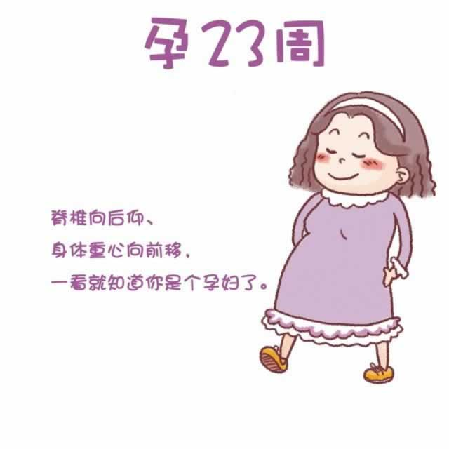

现在，子宫有一个足球大小，子宫顶部已经超过肚脐的高度。随着体重的增加，支撑身体的双腿肌肉的疲劳感加重，隆起的腹部压迫到大腿静脉，让你感觉身体越发沉重，腰酸背痛。平时走路时，为了保持平衡，你的脊柱会不自觉地向后仰，身体重心前倾，周围的人已经很容易看出你是一位准妈妈了。
在这几周里，如果你发现自己出现以下症状：如阴道分泌物增加，呈黏液状，粉红色或带血丝；出现阴道出血或见红；有像月经来潮时的腹部绞痛；每小时超过四次的宫缩；感觉骨盆压力倍增，或出现下背部疼痛，请立即就医，以防早产。